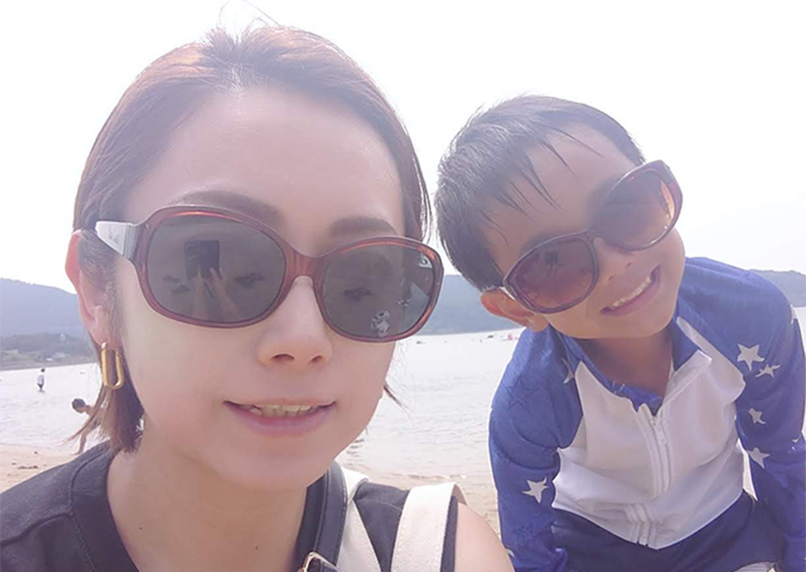

Works


About

江原 由加吏
長崎県平戸市出身
短期大学卒業後、金融・保険業界を主軸に営業や店舗運営管理に従事し、約40名規模のマネジメントも経験しました。
現場で集客から売上向上までの一連のサイクルを構築する中で、Web媒体による戦略的アプローチの重要性を実感。その仕組みを深く理解するために、Web制作の基礎技術を習得しました。
培ってきた「課題を汲み取るヒアリング力」と「プロジェクト全体を俯瞰するマネジメントスキル」を活かし、成果に繋がるWebディレクションを目指しています。
趣味：スポーツ観戦